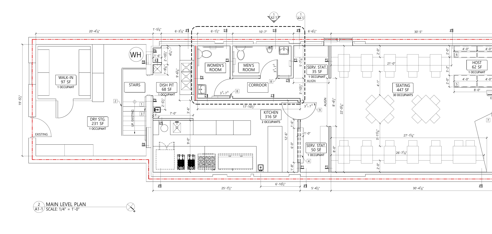

EN: Build all walls to the architect's STAMPED A1-1 plan and the PARTITION-TYPE LEGEND (types P1–P8). This sheet is a field aid, not a replacement for the stamped drawings. Verify every dimension in the field before cutting. Do NOT close/cover any wall until the GC and the plumbing/electrical trades have inspected it.
ES: Construya todos los muros según el plano SELLADO A1-1 del arquitecto y la LEYENDA DE TIPOS DE MURO (tipos P1–P8). Esta hoja es una ayuda de campo, no reemplaza los planos sellados. Verifique cada medida en el sitio antes de cortar. NO cierre/cubra ningún muro hasta que el contratista general y los oficios de plomería/electricidad lo hayan inspeccionado.

| Area / Área | Key size (verify) / Medida clave (verificar) | Wall type / Tipo de muro | Openings / Aberturas |
|---|---|---|---|
| Host / Entry — Anfitrión / Entrada | 62 SF · entry bench 8'-0" each side · host opening 3'-2" | Millwork benches (not partition) Bancas de carpintería | Storefront entry — existing Entrada existente |
| Dining / Seating — Comedor | 447 SF · run 30'-5" · banquettes 21'-0" & 26'-7⅞" · aisle 4'-1" | Perimeter walls existing Muros perimetrales existentes | — |
| Service stations — Estaciones de servicio | 35 SF & 50 SF · segments ~8'-0" / 8'-4½" | P2 | Open to dining Abierto al comedor |
| Kitchen — Cocina | 316 SF · front wall 17'-10½" · depth 12'-6" | P1 | 1 door 3'-0"×7'-0" · half-round expo opening 1 puerta 3'-0"×7'-0" · abertura de pase |
| Corridor — Pasillo | within 10'-7" run · depth 3'-10½" | P1 / P3 / P7 | 1 door 3'-0"×7'-0" 1 puerta 3'-0"×7'-0" |
| Women's Room — Baño de Mujeres | ~6'-1½" wide · depth ~5'-7⅞" | P4 (wet/plumbing wall) · P5 muro húmedo/plomería | 1 door 3'-0"×7'-0" 1 puerta 3'-0"×7'-0" |
| Men's Room — Baño de Hombres | within 10'-7" run · depth ~5'-7⅞" | P3 / P5 / P7 | 1 door 3'-0"×7'-0" 1 puerta 3'-0"×7'-0" |
| Dish Pit — Área de lavado | 68 SF | P6 (wet area) área húmeda | Open Abierto |
| Stairs — Escaleras | EXISTING — do not frame | — | EXISTENTE — no enmarcar |
| Dry Storage — Almacén seco | 231 SF | P1 / P6 | 1 door (existing swing shown) 1 puerta |
| Walk-in Cooler — Cámara fría | 97 SF | Prefab cooler panels — COORDINATE, usually NOT stick-framed Paneles prefabricados — COORDINAR, normalmente NO se enmarca | Cooler door Puerta de cámara |
| Water Heater closet — Clóset calentador | ~1'-6" × 2'-10½" | P1 / P6 / P8 | Access Acceso |
Wall types P1–P8 are keyed to the architect's Partition-Type Legend. Doors shown as "3'-0"×7'-0"" = 3-0 × 7-0. · Los tipos P1–P8 corresponden a la Leyenda de Tipos de Muro del arquitecto.